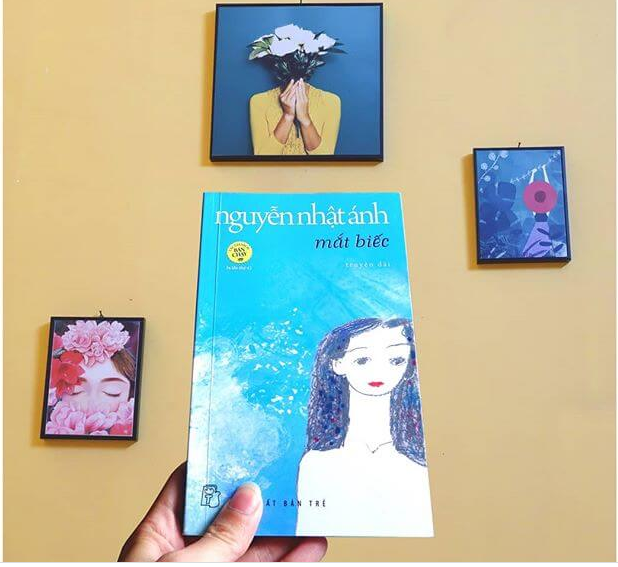

Mắt biếc được tác giả Nguyễn Nhật Ánh sáng tác vào năm 1990. 30 năm sau, câu chuyện ngây thơ tình si ngày nào của Ngạn và Hà Lan cuối cùng đã được lên màn ảnh rộng.
Viết về Mắt biếc là viết về những mối tình si. Không chỉ một mà tới 3 câu chuyện tình. Và chỉ một trong số đó được cái kết có hậu.
Câu chuyện mở đầu với tuổi thơ của Ngạn, một cậu bé thuộc trường phái cổ điển và cô gái hơi hướng hiện đại Hà Lan. Hai người bên nhau từ thời cởi truồng tắm mưa, những ngày tiểu học giành cái trống trường, cho đến những tháng ngày lặng lẽ làm đôi bạn cùng tiến, và nổi giông bão ở cái thời điểm Hà Lan lên thành phố học hành.
Cho dù Nguyễn Nhật Ánh đã cố giành lấy sự đồng cảm của độc giả khi để dành nhân vật “tôi” trong vai Ngạn tự kể về thời ấu thơ cho tới khi trưởng thành, kể về những tháng ngày được ở bên cạnh Hà Lan. Nhưng không thể phủ nhận một sự thật rằng, cậu bé Ngạn và cô bé Lan của ngày nào vốn dĩ đã sống ở 2 thế giới hoàn toàn khác nhau, cho dù khởi đầu chung một môi trường giáo dục. Ngạn là một kẻ nhút nhát, rụt rè, sống nội tâm và không có gì nổi bật
Trái lại, “mắt biếc” Hà Lan mang danh cô gái miền quê xa xứ, nhưng lại đặc biệt mến thương chốn xa hoa thị thành. Cô dường như được sinh ra để dành trọn tình yêu cho những gì đẹp đẽ ở thành phố, nơi mà Lan lần đầu tiên đi học đã quay về miêu tả rằng “đó là nơi huyền ảo, đẹp lung linh gấp trăm lần quê mình”.
Ngạn thích những gì cổ điển, những gì rụt rè, những gì âm thầm, những mối tình câm, ý tại ngôn ngoại.
Lan phá cách, lớn trước tuổi. Cô yêu Dũng ở độ tuổi trăng tròn, và sống chết với mối tình ấy một cách hết sức ngây thơ, nhàm chán. Và dĩ nhiên là 2 con người ấy, vốn ngay từ đầu định mệnh đã an bài rằng họ chỉ có thể làm bạn
Ngạn là bài học cảnh tỉnh cho những anh chàng thích đóng vai trai tốt
No love for good man − Không có tình yêu nào cho những trai tốt! Ông bà đã đúc kết thành câu châm ngôn như vậy từ xa xưa, nhưng vẫn không ít chàng trai thời đại bây giờ vẫn thích đóng vai trai tốt.
Bởi họ đang hiểu nhầm cái nghĩa thực sự của “trai tốt” Và Hà Lan đã định nghĩa được đúng đắn nhất cái danh xưng này, thông qua một nhân vật không thể thảm hại hơn, không ai khác chính là Ngạn! Khi nào Ngạn biết được Hà Lan không yêu mình? Đó là thời điểm mà cô nghe tiếng đàn của anh. Có cô gái nào nghe chàng trai bên cạnh đánh đàn cho mình hơn một năm trời, mà không hiểu ý tứ của anh ta? Chẳng ai hết. Hà Lan biết Ngạn yêu mình, và vô cùng thất vọng khi hơn 1 năm trời mà anh chàng lù đù cục mịch kia chỉ dám “gảy đàn”. Một lời thốt ra cũng tuyệt nhiên không có.
Thậm chí đến phút cuối cùng, chán nản cô mới hỏi “rõ ràng bài này ông sáng tác phải hông”, thì Ngạn mới thành thật “ừ đúng rồi, tất cả những bài hát trước nay tôi đàn đều là do tui tự sáng tác” Và Hà Lan cũng biết tỏng từ lâu rồi. Trời ạ, cái giây phút đó mà Ngạn tỏ tình luôn, thì mối tình ấy đã kết thúc ngay từ lúc ấy, chứ nó không đau đớn thành một câu chuyện day dứt nhiều năm liền Có thể một anh chàng rụt rè như trường hợp này, vẫn còn có thể cứu vãn. Nhưng rồi khi Lan lên thành phố, khi bắt gặp Dũng, mọi cơ hội đã chính thức khép lại với chàng Ngạn tội nghiệp ngày nào! Bởi ngay lúc đó, Dũng hơn hẳn Ngạn về mọi mặt. Dù sau này Dũng lộ chân tướng là trai xấu, nhưng ít nhất hắn cũng thú vị hơn cậu bé rụt rè ở quê Nhiều năm sau, khi mà con gái của Hà Lan đã lên lớp 9, khi mà Ngạn lẫn Hà Lan đều đã ngoài 30, Ngạn một lần nữa lại không thể lọt vào mắt xanh của cô gái năm ấy, một kết cục không thể thảm hại hơn!
Bình Luận: